Aprenda de verdade: com XP, conquistas e uma tripulação inteira torcendo por você
Universidade Log é a sua plataforma pessoal de estudo. Cada curso vira uma trilha visual com missões, quizzes e minijogos: e um elenco de personagens que te acompanha do primeiro módulo até a conquista final. Sem prova decisiva, sem prazo apertado: só progresso real, salvo automaticamente no seu navegador, pronto pra retomar sempre que você voltar.
completos

O que é o Universidade Log
Um lugar só seu pra estudar sem enrolação: sem anúncio, sem distração, sem ninguém comparando seu progresso com o de outra pessoa. Cada curso foi desenhado como uma jornada, não como uma lista de leitura.
Trilha visual, não lista
Cada curso é um caminho em zigue-zague com módulos numerados: você sempre sabe onde está e o que vem a seguir, sem se perder num sumário gigante.
XP, níveis e conquistas
Toda tarefa marcada, quiz acertado ou sessão de foco concluída rende experiência de verdade. Suba de nível, desbloqueie badges e sinta o progresso acontecer.
Glossário em formato de livro
Cada curso guarda um dicionário interativo com efeito de página virando de verdade: todo termo novo que você aprendeu, organizado como um livro físico.
Escolha sua trilha
Quatro cursos completos, cada um com seu próprio elenco de personagens, minijogos e ritmo. Agora com página própria, com mais espaço pra cada um.
Perguntas antes de começar
As dúvidas que mais chegam antes da primeira entrada no diário.
Preciso criar conta ou informar e-mail?+
Não. Não existe cadastro, login nem coleta de e-mail em lugar nenhum do site — nem pra "salvar seu progresso na nuvem", nem pra newsletter. Você abre uma página de curso e já está estudando; o site não sabe nem precisa saber quem você é.
Onde fica salvo o meu progresso?+
No seu próprio navegador, via localStorage. Nada
é enviado pra nenhum servidor: se você limpar os dados do
navegador, usar aba anônima ou trocar de aparelho, o progresso
não te acompanha (e é por isso que a gente não promete
sincronização entre dispositivos). Se quiser, dá pra
exportar/reiniciar o progresso de cada curso individualmente
pela barra lateral.
É gratuito mesmo, sem pegadinha?+
Sim. Sem plano pago, sem anúncio, sem "aula 1 grátis e o resto trancado", sem período de teste que vira cobrança. Os quatro cursos completos, os glossários e os minijogos estão todos abertos, do primeiro ao último módulo.
Funciona bem no celular?+
Funciona: o layout é responsivo em todas as páginas, dos cursos aos minijogos e glossários. Os menus viram versões compactas em telas pequenas, e o progresso salvo no navegador do celular funciona do mesmo jeito que no computador (só não é o mesmo progresso entre os dois — cada navegador guarda o seu).
Posso zerar meu progresso e recomeçar um curso?+
Sim, cada curso tem um botão de reiniciar progresso na barra lateral. É instantâneo e só apaga os dados daquele curso específico, no seu navegador — os outros cursos continuam do jeito que estavam.
O site é acessível pra quem usa leitor de tela, tem baixa visão ou daltonismo?+
Essa é uma prioridade, não um extra: existe uma aba inteira de
Acessibilidade (o ícone de acessibilidade no
menu) com modos pra daltonismo, aumento de fonte pra quem tem
dificuldade de leitura e um modo otimizado pra leitor de tela.
Toda imagem do site tem texto alternativo (alt),
e a navegação inteira funciona só com teclado.
Os temas de cor mudam só a aparência, ou fazem mais alguma coisa?+
Os temas da aba Paleta são só estética — troque à vontade, quantas vezes quiser, sem afetar seu progresso. Já os modos da aba Acessibilidade mudam comportamento de verdade (tamanho de fonte, contraste, filtro de daltonismo, leitura em voz alta). Os dois funcionam juntos e ficam salvos separadamente.
Encontrei um bug ou tenho uma sugestão de curso — pra onde eu mando?+
Direto pro GitHub do criador do projeto. É mantido por uma pessoa só, então nem toda sugestão vira realidade rápido, mas toda uma é lida.
Por que não tem certificado ao final do curso?+
Porque o site não verifica identidade nem aplica prova com vigilância — sem conta, não tem como emitir um certificado que signifique alguma coisa pra quem for validar depois. O foco aqui é o conhecimento em si (e o XP, os badges e a sensação de progresso ficam como recompensa dentro do próprio site).
Sua cara, suas cores
12 temas em 6 famílias: cada uma com um par claro e um par noite. O tema é o mesmo em qualquer curso e fica salvo automaticamente. Clique num quadrado pra testar agora mesmo.
A equipe
20 personagens espalhados pelos cursos: cada um com sua própria idade, origem e personalidade, prontos pra explicar, discordar e comemorar junto com você.
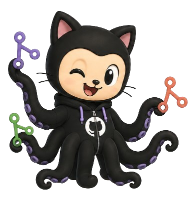
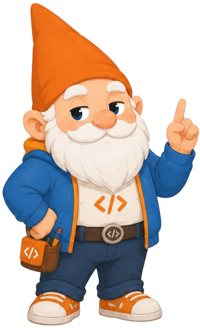
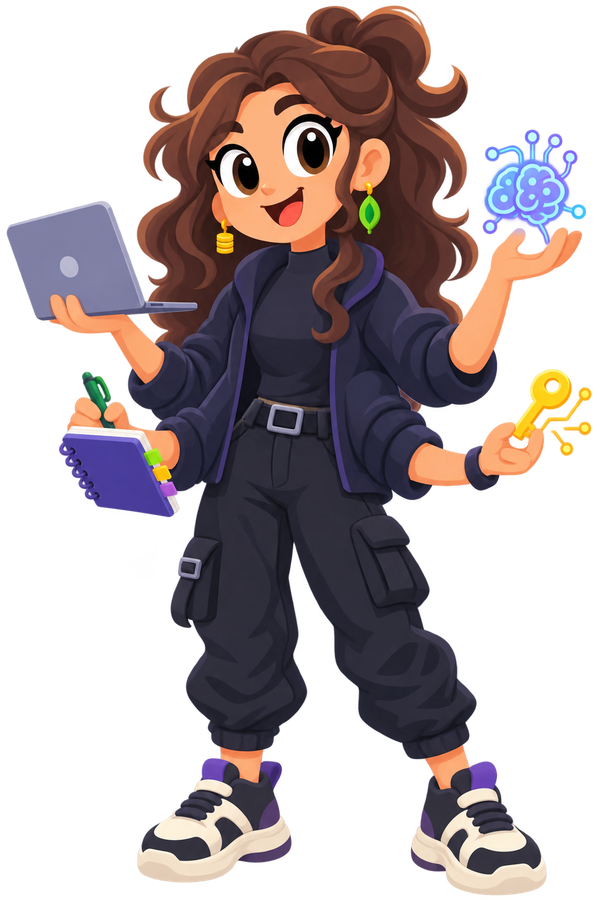
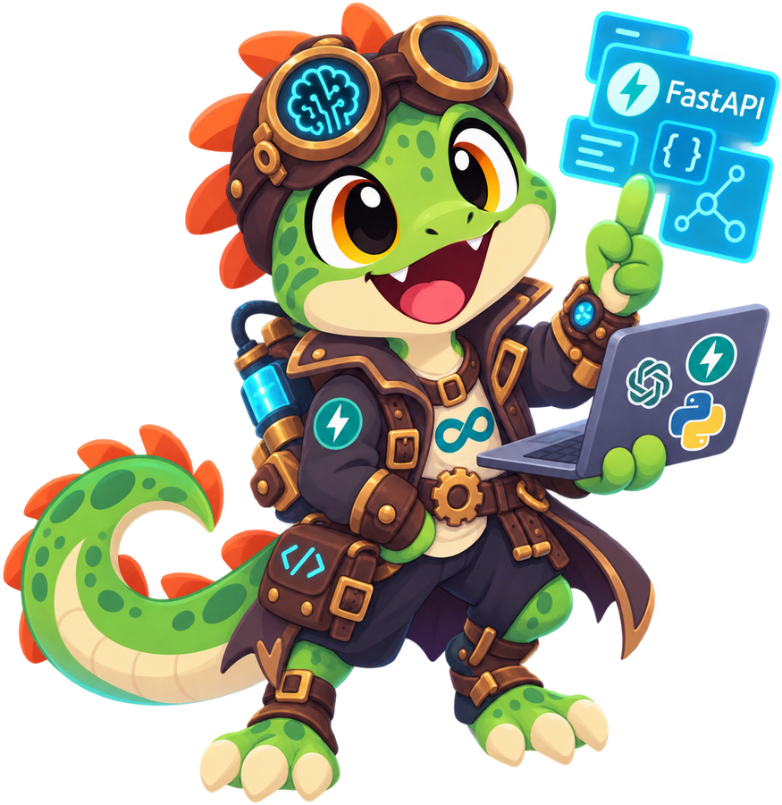
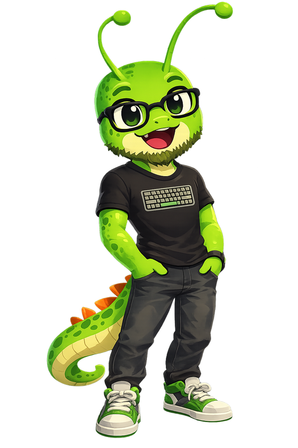
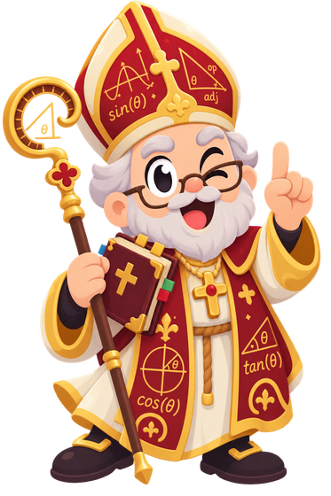
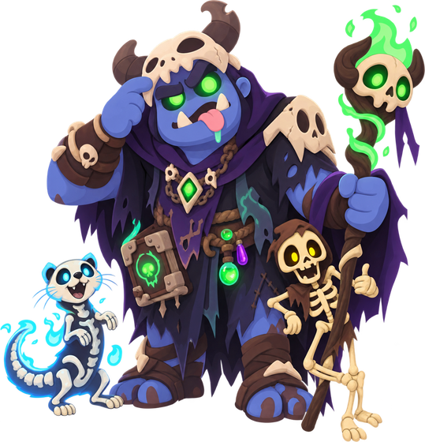
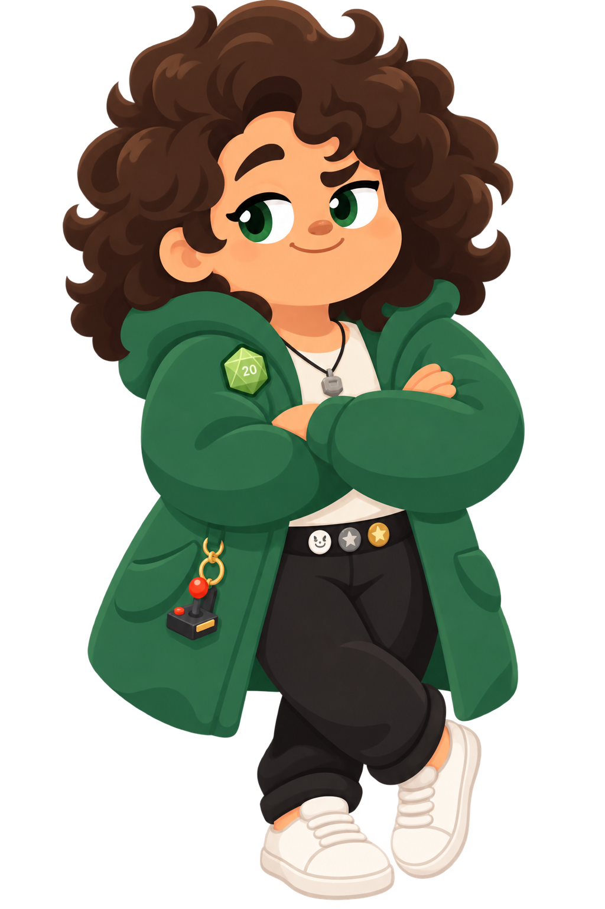
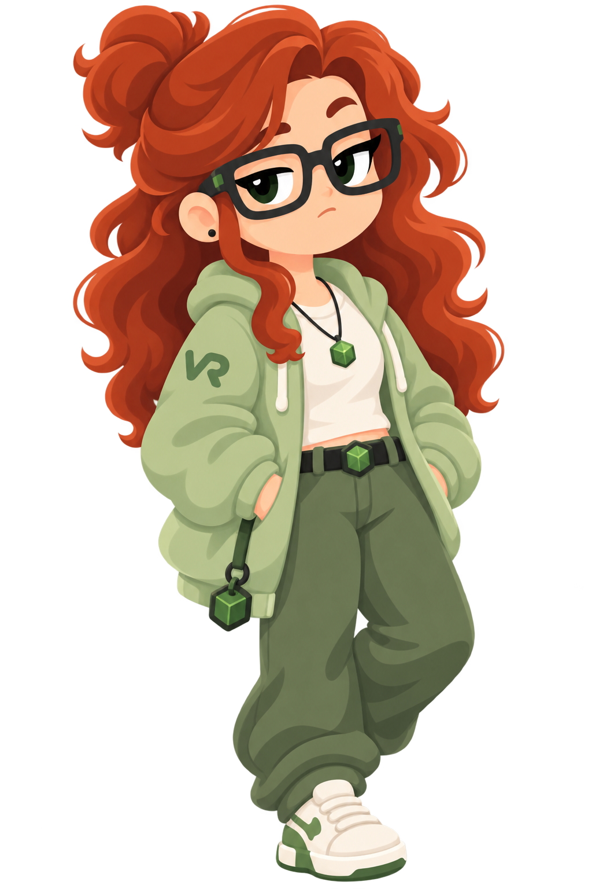
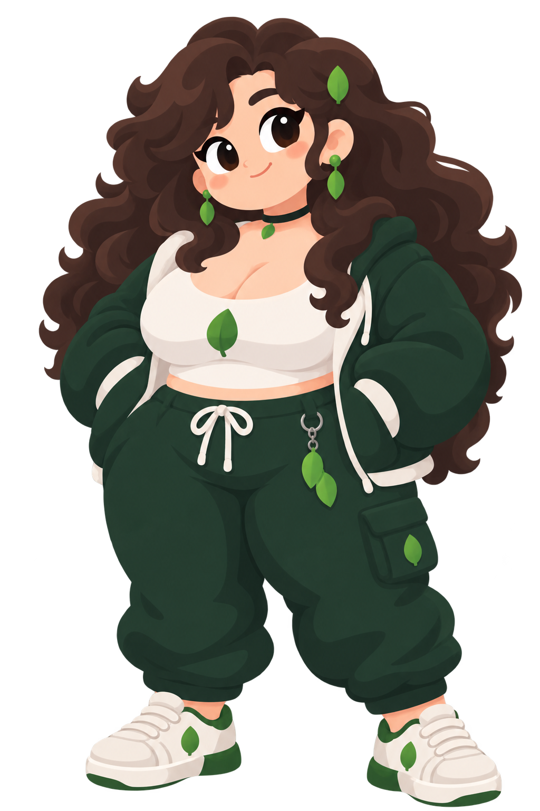
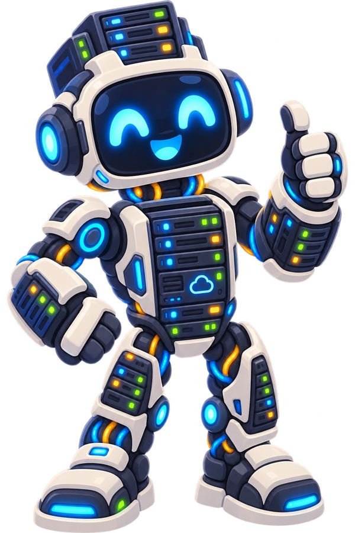
localStorage do seu
navegador. Nada trafega pra nenhum servidor nosso.